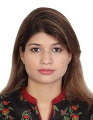
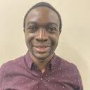

Nishitha Venkannagari
Ph.D. Student
Fall 2026 – Present
Students, alumni, and collaborators advancing research in secure and intelligent networks.

Assistant Professor · Department of Computer Science
Oklahoma State University
Dr. Paranjothi directs the Advanced Networking and Telecommunication Security (ANTS) Research Lab. His research lies at the intersection of wireless networking, cybersecurity, edge computing, and intelligent transportation systems, with a focus on secure and resilient communication for connected and autonomous vehicles, the Internet of Things, and emerging wireless networks, including 6G.
Ph.D. Student
Fall 2026 – Present

Ph.D. Student
Fall 2025 – Present

Ph.D. Candidate
Spring 2023 – Present
M.S. Student
Fall 2026 – Present
Ph.D. in Computer Science
Next: Assistant Professor (Tenure Track), Eastern Washington University
M.S. in Computer Science
Next: To be announced, Oklahoma State University
M.S. in Computer Science
Next: To be announced
M.S. in Computer Science (Thesis)
Next: Ph.D. Student, Oklahoma State University
M.S. in Computer Science (Thesis)
Next: Ph.D. Student, Oklahoma State University
B.S. in Computer Science (Honors)
Next: To be announced
M.S. in Industrial Engineering
Next: Manufacturing Engineer & NC Programmer, ASCO AERO INDUSTRIES
Co-supervised by Dr. Anirudh Paranjothi.
Primary supervisor: Dr. Joshua Li.
M.S. in Computer Science
Next: To be announced
M.S. in Computer Science
Next: To be announced
M.S. in Computer Science
Next: Research Software Engineer, Oak Ridge National Laboratory
B.S. in Computer Science (Honors Thesis)
Next: Software Developer, Hobby Lobby
M.S. in Computer Science
Next: Software Engineer, Nortek Air Solutions
M.S. in Computer Science
Next: Software Developer, Hobby Lobby
M.S. in Computer Science
Next: To be announced
M.S. in Computer Science
Next: Senior Software Developer, Windward Risk Managers
M.S. in Computer Science
Next: Software Engineer, Goldman Sachs
B.S. in Computer Science (Honors)
Next: Graduate Student, Oklahoma State University
M.S. in Computer Science
Next: Software Developer, UPS
M.S. in Computer Science
Next: Software Engineer, aThingz
B.S. in Computer Science (Honors)
Next: Student, Oklahoma State University
Collaborator profiles will be added soon.